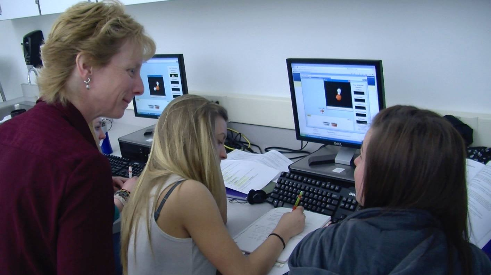
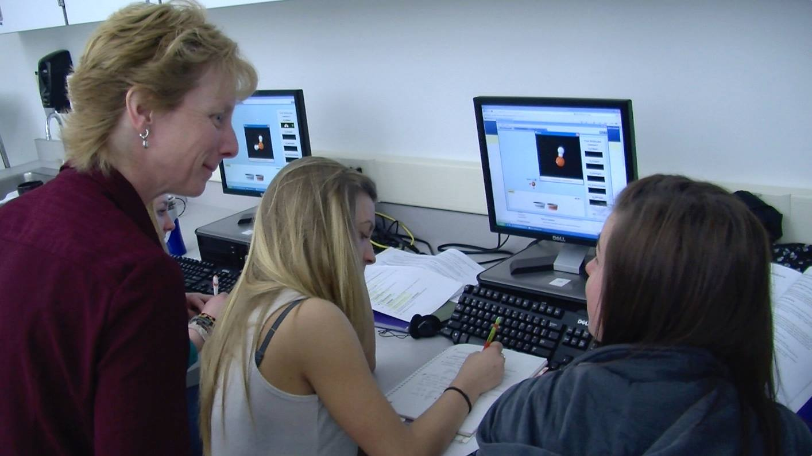

Accessible interactive simulations
for
physics education
Taliesin L. Smith & Emily B. Moore
AERBVI, Reno, Nevada, July 27, 2018
Interactive Simulations help students learn


Use sims in diverse ways
- During lectures
- Clicker questions (engage, poll, evaluate)
- Introductory exploration (introduce topic with a sim)
- Guided exploration - ask students to drive
- Use worksheets & tables to scaffold investigative activities
 


Accessible simulations (Demo)
- Bold focus highlights & robust interactions
- Simle for orientation & guiding
- Descriptive alerts during interaction describing what is happening
- Dynamic descriptions of changing state information available on-demand
- Mixture of sound effects (real sounds) & mapped sounds (sonification)

/